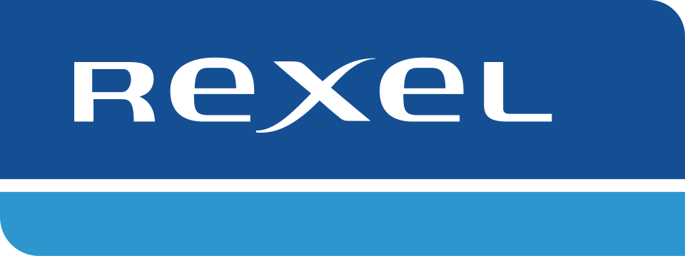

Rexel
Rexel은 전기, 난방, 조명, 배관 설비의 유통을 전문으로 하는 프랑스 기업이다. 재생에너지와 에너지 효율 제품 및 서비스도 취급하며 본사는 파리에 있다.
최종 업데이트

Rexel는 어떤 브랜드인가
Rexel은 프랑스의 전기·난방·조명·배관 설비 유통 기업이다. 재생에너지와 에너지 효율 관련 제품과 서비스도 다룬다.
이 그룹은 17개국에 1,876개 판매 거점을 두고 있으며 26,306명이 넘는 인원을 고용한다. 파리 증권거래소에 상장되어 있다.
1967년 설립된 CDME에서 출발했으며 1993년 Rexel이라는 이름을 쓰기 시작했다. 2008년에는 전문 전기 설비 유통 세계 시장의 약 9%를 차지했다.
Rexel는 어떻게 시작되고 성장했나
Rexel 그룹은 1967년 Compagnie Lebon이 만든 Compagnie de Distribution de Matériel Électrique(CDME)에서 유래했다. CDME는 Revimex, Facen, Sotel, Lienard-Soval 네 회사가 합쳐져 생겼고, 프랑스 지역 가족 기업을 인수하며 전기 설비 판매를 키웠다.
1980년대부터 키프로스, 사우디아라비아, 포르투갈, 서독, 싱가포르, 캐나다 등으로 진출했고 1986년 미국에서 영업을 시작했다. 1990년 12월 Pinault Group이 CDME를 인수해 대주주가 되었고, 1993년 6월 Groupelec Distribution과 합친 뒤 Rexel이라는 이름을 쓰기 시작했다.
Rexel의 브랜드 아이덴티티는 무엇인가
전기 설비 유통에 집중한 프랑스 그룹으로, 2006년 GE Supply 인수를 통해 북미와 아시아태평양에서 1위에 올랐다.
Rexel의 대표 제품과 서비스는 무엇인가
주력 사업은 전기 설비 유통이며, 난방·조명·배관 설비와 재생에너지, 에너지 효율 제품 및 서비스도 공급한다. 1978년에는 전문 전자·컴퓨터 장비 유통과 산업용 자재 사업으로 다각화했으나, 1990년대에 전기 설비 유통 중심으로 사업을 재편했다.
2006년 인수한 General Electric의 미국 유통 자회사 GE Supply는 Gexpro로 이름을 바꿨고 대형 산업 고객에 대한 서비스를 강화했다.
Rexel는 지금 어떤 상태인가
2005년 3월 PPR이 Ray Investment 컨소시엄에 매각을 마무리했고 같은 해 4월 파리 증권거래소에서 상장 폐지되었다. 2007년 경영이사회와 감독이사회를 둔 société anonyme로 법적 형태를 바꾸고 4월 4일 Euronext에 다시 상장했다.
현재 17개국에 1,876개 판매 거점이 있고 26,306명이 넘는 인원을 고용한다.
Rexel 로고는 어떻게 변해왔나
자주 묻는 질문
Rexel는 어느 나라 브랜드인가요?
Rexel는 프랑스의 에너지·산업재 브랜드입니다.
Rexel는 언제 설립되었나요?
Rexel는 1967년 설립되었습니다.
Rexel의 브랜드 아이덴티티는 무엇인가요?
전기 설비 유통에 집중한 프랑스 그룹으로, 2006년 GE Supply 인수를 통해 북미와 아시아태평양에서 1위에 올랐다.
Rexel의 대표 제품은 무엇인가요?
주력 사업은 전기 설비 유통이며, 난방·조명·배관 설비와 재생에너지, 에너지 효율 제품 및 서비스도 공급한다.
Rexel는 현재 어떤 상태인가요?
2005년 3월 PPR이 Ray Investment 컨소시엄에 매각을 마무리했고 같은 해 4월 파리 증권거래소에서 상장 폐지되었다.
Rexel의 본사는 어디에 있나요?
Rexel의 본사는 파리에 있습니다(위키데이터 기준).
Rexel의 공식 웹사이트는 어디인가요?
Rexel의 공식 웹사이트는 https://www.rexel.com/ 입니다.
출처와 검증
Rexel 관련 참고: 공식 웹사이트 · 위키데이터 Q962489 · 영어 위키백과. 브랜드명은 한글과 원어를 함께 표기하되 데이터에 없는 표기는 만들지 않습니다. 기원 국가·설립연도는 검수된 정의문에서 확인된 값을 우선하고, 없을 때만 공식 웹사이트 URL이 일치하는 위키데이터 개체의 값을 씁니다. 위키데이터 값은 2026-11-15 기준입니다.